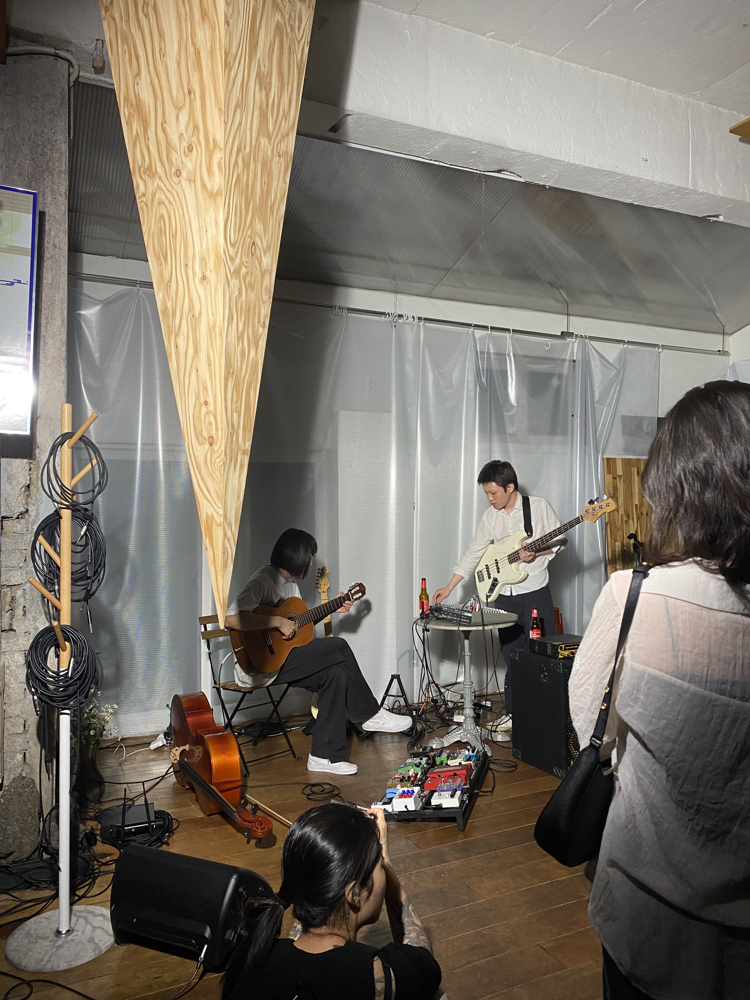
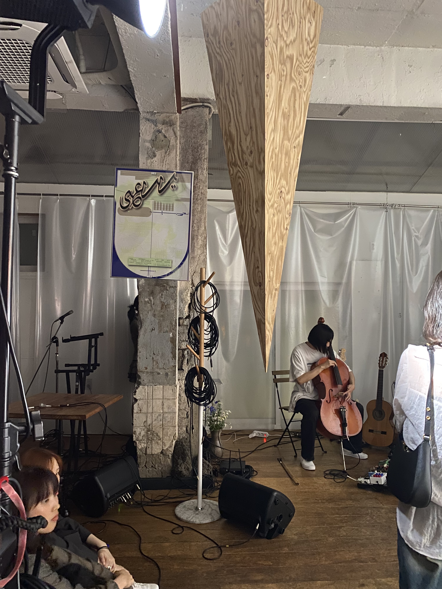

Date: May 25, 2024
Time: 12:00 AM - 10:00 PM
Location: Ferments in Yongsan-gu, Seoul
A friend and I visited Ferments and there so happened to be an event going on. At least when we went, around 8 or 9PM, there was a performance piece that had just begun, accompanied by a musical experiment. It was centered around the use of the "Goldberg Machine", as the artists playfully experimented with the synth-like machine by hooking up multiple instruments to test its sound. On the side, a girl rested on one arm the whole performance, almost like she was doing a one-arm plank, for the whole duration of the performance. She shook from exhaustion and cried to the music's loud vibrations. To best describe the modular sound, there were constrastive moments between really peaceful scores to really stark, loud, and harrowing elements. Although we arrived much too late to see the rest of the artists, their names are here: Y2K92, Do -eon Kim , Purin, American Artist, GH, Conna Haraway, haryung, Yu Chi, Hwi, Kitty, and Dokkaebi. Coupled with the fun venue and kombucha-based drinks, the night made for some immersively-creative experiences and exchanges! .